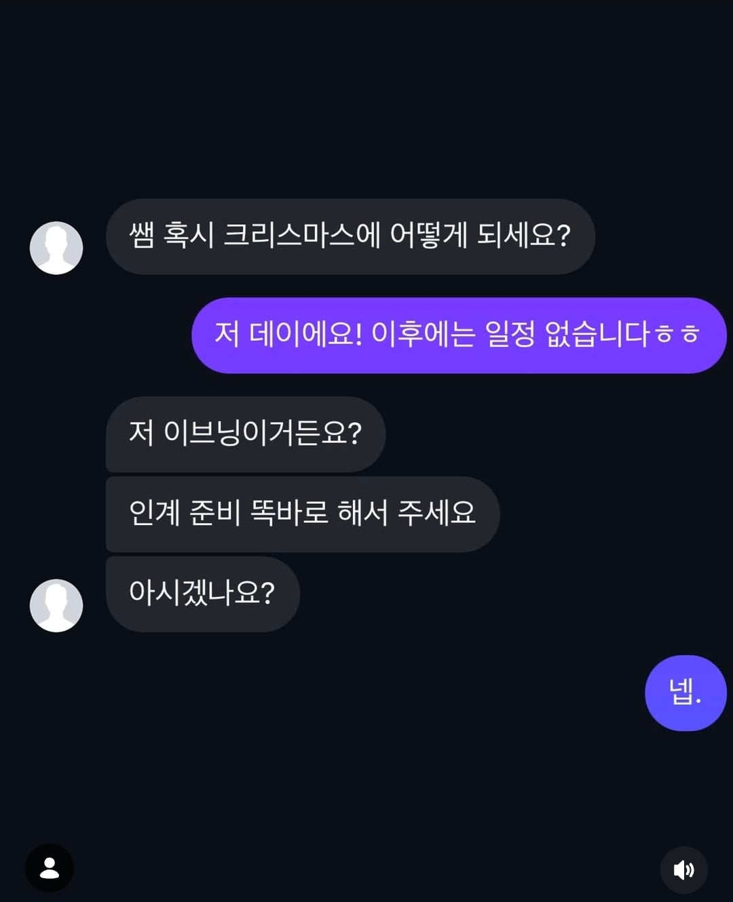

38 · 9 · 31 분 전 · 원문

ㅋㅋㅋㅋㅋㅋㅋㅋㅋㅋㅋ
수집 당시 댓글 10개
240924 · 18 시간 전
하락장 · 18 시간 전
과거에 인계서류 얼마나 개판으로 해놨으면 ㅋㅋㅋㅋㅋㅋㅋ
후욱후욱오호혹 · 17 시간 전
인계 제대로 하세요. 알겠어요?
공구리제왕 · 16 시간 전
간호사?
강군친구 · 16 시간 전
설렜는데 시벌....
베레타38 · 15 시간 전
다시.
싱하형왔다 · 15 시간 전
야..대타 해달라는거 아닌게 어디냐...
HuntingSoul · 15 시간 전
간호사 메신져를 DM으로 한다고...?
전복죽 · 15 시간 전
??? : "아 인계동에서 뵙죠"
년째 잉어킹 · 13 시간 전
츄파츄파
과거에 인계서류 얼마나 개판으로 해놨으면 ㅋㅋㅋㅋㅋㅋㅋ